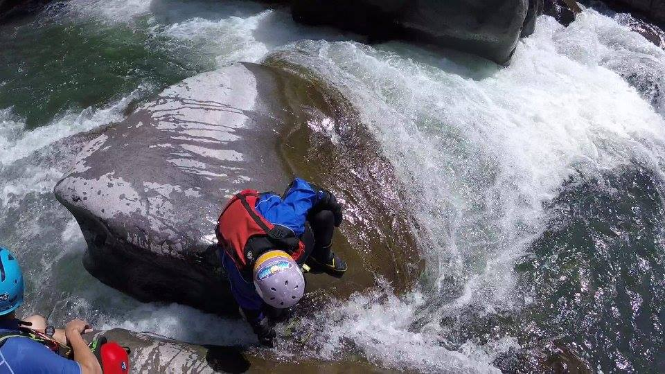

玉峰溪 2017 Sieve 石縫水洞事故
Nori Hole / 阿振 Hole / 文淵縫 -- 大怒神與田埔峽谷之間
又是不平靜的六月天，在幾位激流舟友閒談中，聊到危險地形；文淵想起2017年時的經歷，動手整理成文字，讓大家得以回顧參考。

二顆石頭的溝頂，卡一個 60cm 的石頭，文淵攝影。背景資訊
- 玉峰溪 YuFeng River
- 起點：控溪吊橋－秀巒村 (集水區 120km² / 高823m)
- 終點：玉峰大橋－玉峰村 (集水區 343km² / 高685m)
- 日期：2017-10-08（週日）
- 天氣：晴 （影片記錄皆有藍天）
- 水位：玉峰站 683.66m
- 地點：大怒神與田埔峽谷之間。 經影片回顧比對，應與 阿振 Hole 20241 及 Nori Hole 20092 位於相同位置
- 人員：
- 杜醫師 (Jackson Little Hero)
- 鄧哥 (Dagger Manba)
- 英彥 (Pyranha Burn S)
- James、小昇（父子檔 Aire 雙人充氣船）
- 卡卡 (Hero)
- 文淵（WaveSport Diesel 65）
- 人員均安、掉槳一支
苦主回憶
文淵整理於 2025-06-30
當天一行人跟著前方領航，邊划邊看
行經此處上游的時候，領航走右岸主流，順著主流就下去了
現場路線比較彎
最後一個落差下面看不到，左邊有一處迴流可停船
我下到這個落差，領航右轉就下去了
我看卡卡停在彎內我就靠過去停，想說看一下
結果卡卡跟我說，他停在水洞上面....
就是上面杜醫師站的位置那條溝
我靠過去後二台船就船頭朝上停在那邊
一開始卡卡想要下船上岸
我叫卡卡先停下來，等其他人來在說
沒多久下方人員就在喊有水洞
鄧哥跟杜醫生下船走上照片處協助較近的卡卡先下船
卡卡下船後，我的船一歪就翻船了
此時鄧哥跟杜醫師二人在旁邊
有人拉救生衣有人拉船，卡卡站哪邊我就沒注意到了
一下翻下去我就馬上喝了一口水
喝完之後冷靜一點保持閉氣
手應該就在亂揮了吧
鄧哥就叫杜醫生說人在喝水了不要管船了，然後就一起把我拉出水面.
頭的位置其實一直都在水面附近，就大概蓋到額頭附近
過程沒人有錄到
卡在洞口可能３分鐘有
從我翻船到脫困，應該就半分鐘到一分鐘
上來也是喘到不能說話
後來船卡在洞裡，英彥下去踹，船從下游處出來（中柱有歪）
Core 新槳沒看到，我也不想在找了
後來就划小昇的槳，James載小昇下航
石頭縫現場地貌如下 0:46 - 0:54
閒聊心得
| 博 文 | 這麼久了還寫得出來，看來是印象深刻，幸好當時是無傷事故 |
| 文 淵 | 對啊 對話我都還記得 柴油65第一趟 |
| 酷 力 | 千鈞一髮，幸好旁邊有夥伴 |
| 文 淵 | 真的，喝水完也不太緊張，想說鄧哥他們都在旁邊了 |
| 鄧 哥 | 很棒的分享，但怎麼可以冷藏這麼久 |
| 大師兄 | 救生衣的腰扣要扣緊，同伴要拉人才好拉！ |
| 立 德 | 團隊風險和個人風險的最大承受值有多少，決定我的舒適圈能開到多少 |
| 大師兄 | 船要停石頭後面不要停石頭前面，有可能下面有水洞！ |
相關紀錄
-
玉峰溪 ∫ 從 Nori-hole 到阿振齁 dt - 2024-11-30 ↩
-
Nori Hole 精彩畫面 - 2009-06-21 玉峰溪-盛雄整理 ↩